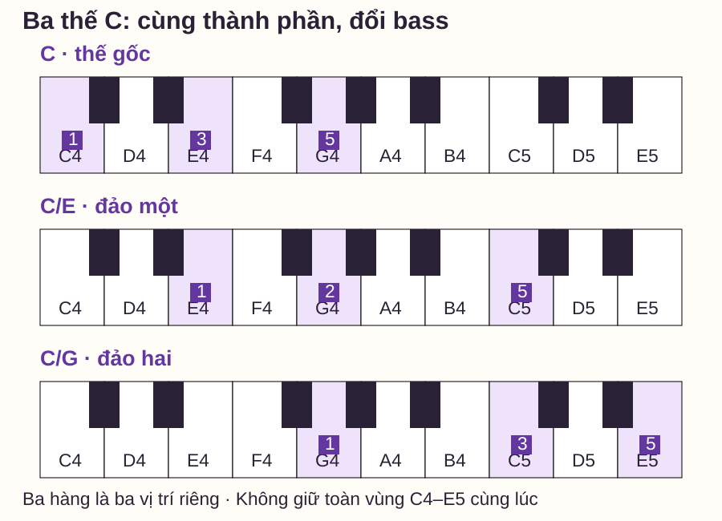
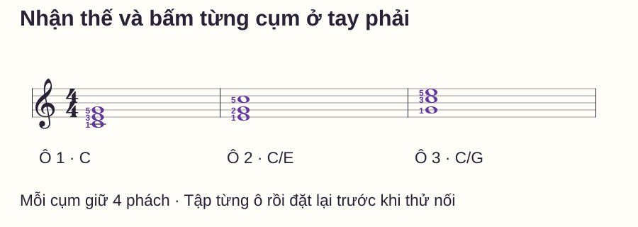

Hợp âm và hòa âm
Đảo hợp âm piano: nhận ba thế và chọn vị trí dễ chuyển
# Đảo hợp âm piano: nhận ba thế và chọn vị trí dễ chuyển
Bạn biết hợp âm C có C–E–G, nhưng thấy E–G–C trên sheet lại tưởng đó là hợp âm mới. Ba tên nốt chưa thay đổi; điều thay đổi là âm nào nằm thấp nhất và các nốt được đặt ở quãng tám nào.
Bài này giúp bạn nhận ba thế của C, đọc ký hiệu C/E và C/G, rồi chọn một vị trí để tập chuyển. Đây là phần đầu loạt Hòa âm ứng dụng; phần tiếp theo dùng các thế đã chọn trong vòng C–F–G–C. Không cần mở app để làm bài tập.
Trả lời nhanh
Đảo hợp âm ba thay nốt nằm thấp nhất trong khi giữ các thành phần của hợp âm. Với C trưởng, ba nốt là C–E–G: C thấp nhất là thế gốc, E thấp nhất là đảo một, G thấp nhất là đảo hai. Trong ví dụ chỉ chơi tay phải, C4–E4–G4, E4–G4–C5 và G4–C5–E5 minh họa ba thế ấy. Khi có tay trái hoặc nhạc cụ khác, phải xét bass thấp nhất của toàn bộ phần hòa âm, không chỉ hình tay phải. Học tên từng nốt và bass trước, sau đó chọn ngón vừa tay; không ép giãn hoặc mặc định một thế luôn tốt nhất.
Nốt gốc khác nốt bass thế nào?
Nốt gốc giúp xác định tên hợp âm: C trưởng có gốc C dù bạn xếp các âm theo thứ tự nào. Bass trong ngữ cảnh này là âm thấp nhất thực sự đang vang của phần hòa âm đang xét. C/E đọc là “C trưởng, bass Mi”; C/G là “C trưởng, bass Sol”. Chữ sau dấu gạch chéo không yêu cầu thêm một hợp âm E hoặc G riêng.
Music Composition & Theory — Inversions phân loại thế gốc, đảo một và đảo hai theo việc bass là âm gốc, âm ba hay âm năm. Với C trưởng, các vai trò ấy lần lượt là C, E, G. Bài này chỉ luyện hợp âm ba, chưa cần học ký hiệu hợp âm bảy hoặc số bè cổ điển.
Ba thế C trên bàn phím
C = Đô, E Mi, G Sol. C4 là Đô giữa, C5 là Đô cao hơn một quãng tám; E5 là Mi phía trên C5. Các nốt có cùng chữ nhưng khác số nằm ở vùng đàn khác nhau. Các ví dụ dùng phím trắng, không có dấu hóa.

| Cách xếp từ thấp lên | Thế của C | Ký hiệu có bass | Ngón phải gợi ý |
|---|---|---|---|
| C4–E4–G4 | Thế gốc | C | 1–3–5 |
| E4–G4–C5 | Đảo một | C/E | 1–2–5 |
| G4–C5–E5 | Đảo hai | C/G | 1–3–5 |
Ngón 1 cái, 2 trỏ, 3 giữa, 4 áp út, 5 út. Số ngón là gợi ý cho các vị trí đang viết, không phải luật cho mọi bàn tay. Nếu chưa bấm cụm thoải mái, chơi từng nốt để nhận trước hoặc chỉ hai nốt rồi bổ sung; không cố giữ bằng lực gồng.
Đừng xác định thế đảo chỉ bằng tay phải
Giả sử tay phải chơi E4–G4–C5 nhưng tay trái có C3 đang vang thấp hơn. Toàn bộ cụm có bass C, nên hợp âm C đang ở thế gốc, dù hình tay phải giống cách xếp đảo một trong ví dụ chơi riêng.
Ngược lại, nếu chỉ có E4–G4–C5 đang vang thì E4 là bass và đây là C đảo một. Khi đọc cả bản, hãy xem các bè và bass thực tế, kể cả các âm còn ngân. Trong bài tập dưới, tay trái nghỉ để ba thế tay phải đồng thời minh họa đúng ba thế của toàn cụm.
Từng bước nhận và chơi một thế
1. Gọi tên ba phím, chưa bấm cả cụm
Với E4–G4–C5, nói đủ E, G, C và kiểm vùng. Xếp lại các tên trong đầu thành C–E–G để nhận hợp âm C. Đừng đặt tên hợp âm chỉ theo chữ ở nốt thấp nhất.
2. Tìm bass để gọi thế
Nốt thấp nhất đang xét là E4, tức âm ba của C trưởng: đảo một. Nếu có một bass thấp hơn ở tay còn lại, phải xét lại theo ví dụ trên.
3. Thử các nốt rời rồi bấm thành cụm
Đặt các ngón đã chọn, chơi từng âm để kiểm đúng phím. Sau đó bấm cùng lúc và nghe xem một tiếng có đến muộn hoặc quá mạnh không. Chưa cần chuyển liên tục cả ba thế nếu đang phải tìm phím từng nốt.
4. Tập từng ô, rồi mới thử nối

Trong 4/4, nốt tròn giữ bốn phách. Đếm một ô chuẩn bị, đánh cụm ở 1, giữ qua 2–3–4, nhả ở số 1 tiếp nếu kết thúc lượt. Có thể thử 50 phách/phút, một click mỗi phách; giảm hoặc bỏ nhịp để tìm thế trước nếu chưa xác định kịp phím. Tập mỗi thế hai lượt có đặt lại, không pedal.
Khi ba thế rõ, thử nối ba ô tại tempo phù hợp. Cho phép một khoảng tách âm ngắn để chuyển tay, nhưng giữ các điểm đánh mới vào đúng phách 1; chưa cần nối tiếng legato giữa các thế. Nếu phải dừng để tìm thế kế, quay về tập cặp vị trí có khoảng chuẩn bị riêng, rồi thử thời gian lại.
Vì sao đảo hợp âm giúp chuyển gần hơn?
Chẳng hạn từ C4–E4–G4 sang hợp âm F, bạn có thể chọn C4–F4–A4 thay vì chuyển cả hình lên F4–A4–C5. Lựa chọn đầu giữ C4 như một cao độ chung, hai âm còn lại đi E4→F4 và G4→A4. Trong ví dụ một tay này, F có bass C nên là F/C, đảo hai.
Yamaha — Pop/Rock Chord Voicings minh họa việc chọn cách xếp gần để nối các tiếng và cũng lưu ý không phải lúc nào cũng phải chọn thế gần nhất. Ở bản cụ thể, giai điệu, vùng âm, bass và cách nghe quyết định lựa chọn. “Có âm chung” không có nghĩa tự động phải giữ phím liên tục; mẫu nhịp và dấu nối mới cho biết có đánh lại hay không.
Tự kiểm: nhận hợp âm rồi mới nhìn bass
Chưa đàn, xác định ba nhóm sau, mỗi nhóm là toàn bộ phần đang vang, không có bass khác:
- G3–C4–E4: tên hợp âm và thế nào?
- C4–G4–E5: có phải đảo hai vì E nằm trên cùng không?
- G3–B3–D4: có phải một thế C không?
Mở đáp án
1: C/G, C đảo hai vì bass G. 2: C thế gốc vì bass C; khoảng cách các âm đã mở rộng nhưng nốt trên cùng không quyết định thế đảo. 3: G trưởng thế gốc, gồm G–B–D, không phải C. Luôn kiểm thành phần trước rồi mới gọi thế.
Đây là phép nhận diện bằng tên nốt, không thay phép đọc sheet mới. Sau nghỉ, che nhãn ba ô nhạc trong hình và thử gọi lại tên từng cụm, bass và thế trước khi đàn.
Lỗi thường gặp
| Biểu hiện | Điều cần kiểm | Cách sửa |
|---|---|---|
| Gọi E–G–C là hợp âm E | Có chỉ đặt tên theo bass không? | Gom ba tên thành C–E–G rồi phân biệt gốc với bass |
| Thấy tay phải E–G–C thì luôn nói C/E | Có bỏ qua bass thấp hơn không? | Xem toàn cụm đang vang, gồm tay trái |
| Chỉ chuyển cả C–E–G lên một quãng tám rồi gọi đảo | Thứ tự vai trò bass có đổi không? | Kiểm bass vẫn C thì vẫn thế gốc |
| Cố giữ ba thế cùng lúc | Có hiểu hình là ba vị trí riêng không? | Nhả và đặt lại, không trải cả vùng C4–E5 |
| Thế gần nhưng âm thanh không hợp câu | Có xem giai điệu/vùng âm/bass không? | Chọn thế theo bản nhạc, không theo khoảng cách một mình |
Routine mười phút và điều kiện học tiếp
- 0–2 phút: nhận C/E/G và chỉ bass của ba hình.
- 2–4 phút: chơi từng nốt trong mỗi thế, chọn ngón thoải mái.
- 4–6 phút: bấm từng cụm, kiểm ba tiếng cùng lúc và giữ đủ bốn phách.
- 6–8 phút: làm ba câu tự kiểm trước khi mở đáp án.
- 8–10 phút: thử một cặp thế hoặc C→F/C, ghi chỗ tìm phím chưa rõ.
Học tiếp khi bạn gọi đúng thành phần, bass và thế của ba mẫu; bấm từng vị trí thoải mái; phân biệt được hình tay phải với bass của toàn cụm. Không cần chuyển nhanh trước khi đọc vòng I–IV–V, nơi bạn có một bộ thế cụ thể để luyện thời gian.
Câu hỏi thường gặp
Đảo hợp âm có làm đổi tên hợp âm không?
Các nốt thành phần vẫn thuộc cùng hợp âm. Ký hiệu có thể thêm bass, như C/E, để nói rõ cách xếp đang dùng.
Đảo một có nghĩa là chuyển nốt trên cùng xuống dưới không?
Điều quyết định là bass trở thành âm ba của hợp âm. Cách di chuyển nốt để tạo ra thế đó có thể khác nhau; đừng chỉ học một thao tác tay rồi bỏ việc kiểm bass.
Mọi hợp âm đều có đúng ba thế không?
Bài này nói về hợp âm ba. Hợp âm có số âm khác cần xét theo cấu tạo riêng; chưa áp số ba cho mọi ký hiệu hợp âm.
Tôi có bắt buộc dùng ngón 1–2–5 ở đảo một không?
Không. Đây là gợi ý cho E4–G4–C5 tay phải. Giáo viên có thể chọn ngón khác theo bàn tay, câu trước/sau và mục tiêu chuyển động.
Có cần pedal để chuyển êm không?
Mẫu đang tập không pedal để kiểm phím và giữ/nhả. Pedal là nhiệm vụ khác; nó không thay việc biết đúng nốt của thế kế.
Có nên học cả 12 hợp âm ngay không?
Hãy kiểm chắc khái niệm với C và một lần chuyển cụ thể trước. Mở rộng từng hợp âm khi bạn nhận được thành phần và bass, thay vì học thuộc nhiều hình tay chưa hiểu.
Nguồn và ghi chú biên soạn
- Music Composition & Theory — Inversions: phân loại thế theo bass.
- Yamaha — Pop/Rock Chord Voicings, Part 1, Jerry Kovarsky: lựa chọn cách xếp/nối tiếng. Đối chiếu ngày 27/10/2026.
- Hình, sheet, câu hỏi và routine là nội dung gốc của website; chưa có giáo viên độc lập review hoặc thử nghiệm người học.